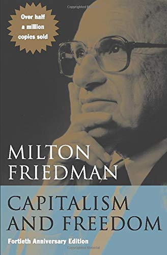
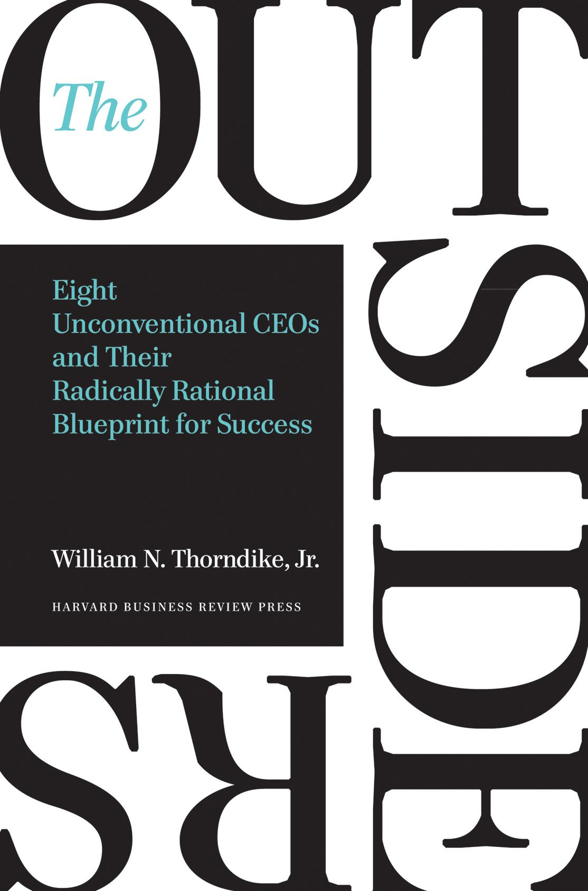

1. Best Overall: Economics in One Lesson
"Economics in One Lesson," first published in 1946, is a good starting point for anyone who needs a thorough but not overly technical explanation of economics and how economies work. While it uses some dated examples, the underlying message remains relevant today: economics is best viewed as a long game that factors in both known and unknown elements that can influence outcomes.
This economics book applies that principle to common scenarios that are easy to understand, such as minimum wage and government spending initiatives. It challenges the notion that economics is best interpreted as a series of short-term scenarios, events, and trends. Overall, this book is a solid choice for building your economics knowledge base if you want something that's easy to digest.
2. Best for Beginners: Basic Economics
If you're looking for a general overview of economics and how different economic systems work, "Basic Economics" is your guide. Thomas Sowell's bestseller covers the basics of capitalism, socialism, feudalism, and the like with a concise explanation of the underlying principles of each. It's very much a common-sense approach to high-level economic concepts explained for the everyday person.
This economics book is designed to reinforce the basic relationships between the entities that own or control resources and those that need or purchase them. It incorporates real-life examples along the way, offering a relatable context for how the economy operates and how it affects the people who live within it.
Check out our guide to the best personal finance books you can buy today.
3. Best on Microeconomics: Freakonomics
Microeconomics is a branch of economics that focuses on single drivers of economic change and the impacts of individual decision-making. In other words, it's largely about cause-and-effect. Sounds simple enough, but "Freakonomics" doesn't take the traditional approach to understand microeconomics and its impacts on the broader economy. Instead, authors Steven Levitt and Stephen Dubner analyze the links between seemingly unrelated concepts, such as how crime rates coincide with abortion rates.
This economics book is a fun and thought-provoking read that's designed to spur armchair economists to closely look at how things that may not seem important can have a ripple effect where the economy is concerned. After its publication in 2005, the authors have continued expanding on their microeconomics theories in two other books, "SuperFreakonomics" and "Think Like a Freak".
4. Best on Capitalism: Capitalism and Freedom

There are different approaches that tend to dominate world economies, including capitalism. In a capitalist economy, or in a mixed economy that incorporates capitalist principles alongside something else, such as socialism, the markets and market transactions are the main movers and shakers of economic activity.
The idea behind capitalism is that capital goods are owned privately, by either individuals or businesses, while the public (i.e. consumers) supplies the labor to produce them. The pace at which those goods and/or services are produced is based on the laws of supply and demand.
In "Capitalism and Freedom," author Milton Friedman examines how capitalism paves the way for economic progress. He makes a strong argument for the merits of capitalism in its purest form and its role in promoting individual economic freedom.
5. Runner-Up, Best on Capitalism: Capitalism in America
Alan Greenspan served as chair of the Federal Reserve for nearly two decades before moving into the private sector as an economic consultant. His book, "Capitalism in America," co-authored with Adrian Wooldridge chronicles the evolution of capitalism in the U.S. over the last 400 years. There's a definite appeal for history buffs, but it's also great for readers wanting to learn more about the context behind major events in American economic history, such as the Great
Depression and more recently, the uptick in the economy following the 2016 election. Greenspan offers his personal perspective on the current state of capitalism in America and its key strengths and weaknesses as a leading world economic power. Those points are underscored with plenty of data points and statistics to back them up but it's still highly readable.
6. Most Unique: Doughnut Economics
A lot of what happens in economic policy, in the U.S. and in other countries, is a repetition of things that have been tried before. And while history often repeats itself, author Kate Raworth challenges that idea in her book, "Doughnut Economics." She offers some alternative ways to think about how to shape economic policy now and in the coming decades to benefit current and future generations.
Specifically, she highlights seven focuses for re-envisioning the economy against a backdrop of encouraging both financial and environmental sustainability on a global scale. Raworth's end goal is to promote the idea that economic prosperity and a healthy world don't have to be mutually exclusive of one another.
Take a look at other product reviews and shop for the best investing books available online.
7. Best Psychological: Thinking, Fast and Slow
A New York Times bestseller, "Thinking, Fast and Slow" is a critically acclaimed and award-winning psychology book, and with good reason. In it, author Daniel Kahneman, a psychologist and Nobel Prize winner, explores the mind and presents the two systems that drive how we think: System 1 is fast and emotional, while System 2 is slower and more logical. He also shares where we can and can't trust our intuitions and how to reap the benefits of slow thinking. As much as the book offers insights on why everyday choices are made, it also helps us understand why certain business decisions are made.
8. Best on Income Inequality: Capital in the Twenty-First Century
Highly regarded as one of the most important economics books, "Capital in the Twenty-First Century" by Thomas Piketty, a French economist, focuses on wealth and income inequality. It seeks to understand what drives the accumulation and distribution of capital, the history of inequality, how wealth is concentrated, and prospects for economic growth. To support his findings and unpack any economic patterns, Piketty analyzes data from 20 countries dating back to the 18th century. All in all, the book provides a better understanding of economic history and contends that inequalities may continue to rise due to political action.
Need some more help finding what you're looking for? Read through our best stock market books article.
9. Business Adventures - John Brooks
 “Business Adventures remains the best business book I’ve ever read.” —Bill Gates, The Wall Street Journal
“Business Adventures remains the best business book I’ve ever read.” —Bill Gates, The Wall Street Journal
What do the $350 million Ford Motor Company disaster known as the Edsel, the fast and incredible rise of Xerox,
and the unbelievable scandals at General Electric and Texas Gulf Sulphur have in common?
Each is an example of how an iconic company was defined by a particular moment of fame or notoriety;
these notable and fascinating accounts are as relevant today to understanding the intricacies of corporate life
as they were when the events happened.
Stories about Wall Street are infused with drama and adventure and reveal the machinations and volatile nature
of the world of finance. Longtime New Yorker contributor John Brooks’s insightful reportage is so full of personality
and critical detail that whether he is looking at the astounding market crash of 1962, the collapse
of a well-known brokerage firm, or the bold attempt by American bankers to save the British pound,
one gets the sense that history repeats itself.
Five additional stories on equally fascinating subjects round out this wonderful collection
that will both entertain and inform readers . . .
Business Adventures is truly financial journalism at its liveliest and best.
10. The Outsiders - William N. Thorndike

“An outstanding book about CEOs who excelled at capital allocation.” — Warren Buffett
Named one of “19 Books Billionaire Charlie Munger Thinks You Should Read” in Business Insider.
“A book that details the extraordinary success of CEOs who took a radically different approach to corporate management.”
— Charlie Munger, Vice-Chairman of Berkshire Hathaway Corporation
“Thorndike explores the importance of thoughtful capital allocation through the stories of eight successful CEOs.
A good read for any business leader but especially those willing to chart their own course.” — Michael Dell,
chairman of the board of directors and chief executive officer of Dell
What makes a successful CEO? Most people call to mind a familiar definition: “a seasoned manager
with deep industry expertise.” Others might point to the qualities of today’s so-called celebrity CEOs—charisma,
virtuoso communication skills, and a confident management style. But what really matters when you run an organization?
What is the hallmark of exceptional CEO performance? Quite simply, it is the returns for the shareholders of
that company over the long term.